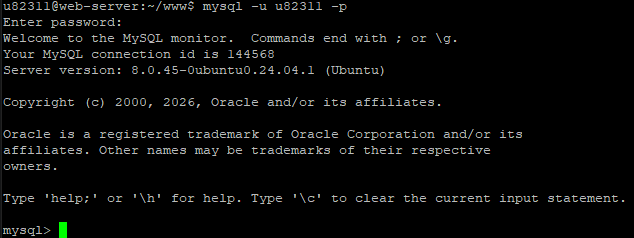
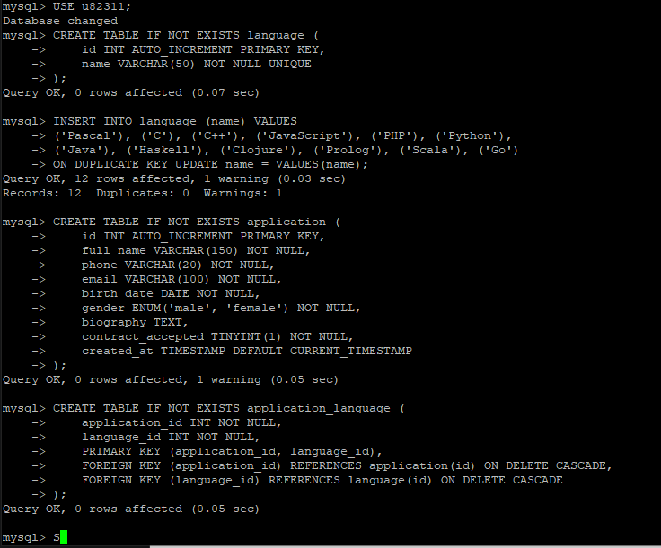
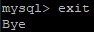
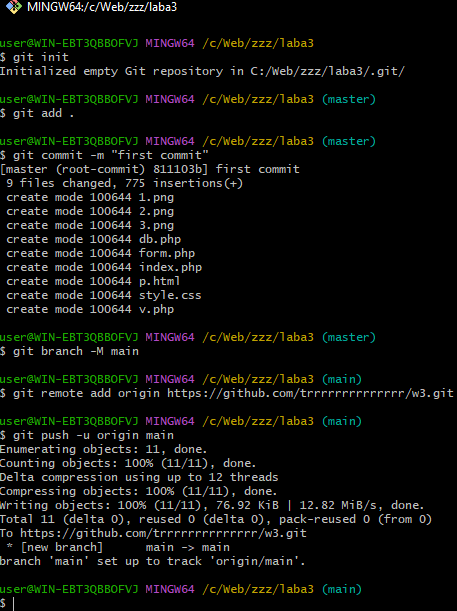
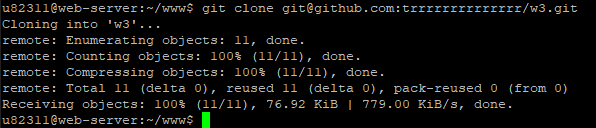
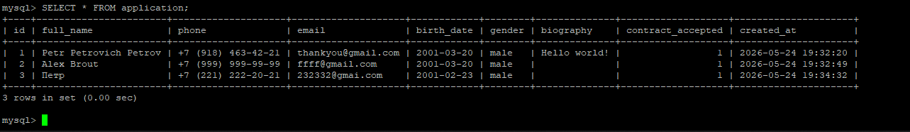

Лабораторная работа №3
1. Подготовка окружения
Создание каталога и подключение к MySQL
Создан каталог ~/www/w3 для размещения файлов лабораторной работы.
Затем выполнен вход в MySQL под своим пользователем (u82358).



2. Создание таблиц базы данных
В соответствии с заданием созданы три таблицы:
application– основные данные анкетыlanguage– справочник языков программированияapplication_language– связующая таблица (многие ко многим)
Таблицы созданы с учётом 3-й нормальной формы, внешними ключами и каскадным удалением.
В таблицу language добавлены 12 языков из задания.

3. Размещение файлов на сервере через Git
Передача файлов на GitHub и клонирование на сервер
На локальном компьютере создан репозиторий, добавлены файлы index.php, anketa.php, v.php, style.css и скриншоты. Выполнен push на GitHub.
На сервере репозиторий склонирован, файлы скопированы в каталог ~/www/w3.


4. Проверка сохранения данных
После отправки тестовой анкеты через форму (index.php) выполнена проверка записей в базе данных. Запись успешно добавлена с корректными полями.